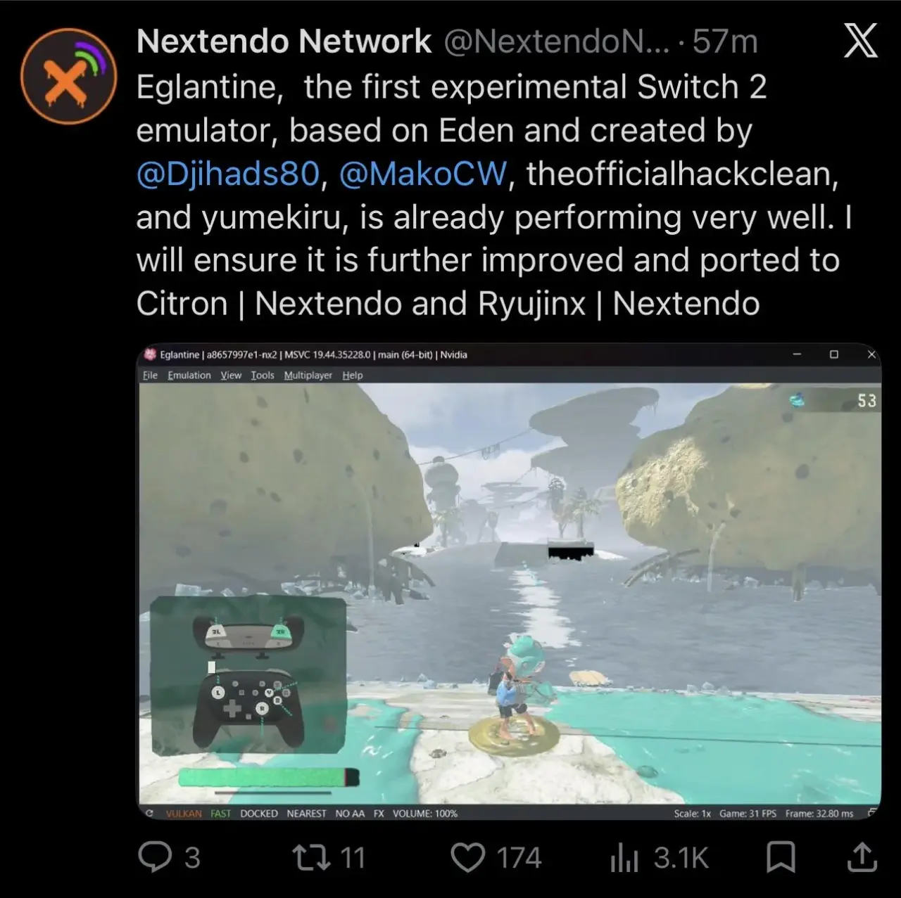
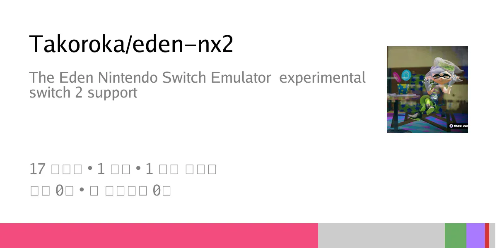
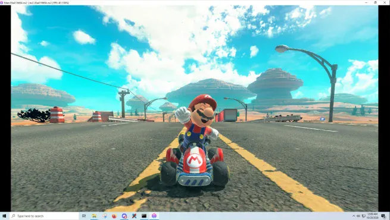

구동률 95% 넘는다고
닌텐도 비-상



구동률 95% 넘는다고
닌텐도 비-상
이제 스위치2도 커펌 만들수있는데 안하는 것처럼 느껴지네
지금 취약점뚫고 홈브류 돌리는데까진 성공했다던데
닌샵이랑 온라인 서비스는 기기 고유밴이라서 잘 안하려는듯??
걍 이왕 이렇게된거 닌텐도도 스팀에 게임 출시해라
원래도 에뮬 있었는데 왜 호들갑인거임 머가 다름?
스위치2 에뮬은 초창기때 고소처먹고 개발중단됐음
없었음 2는
?? 구글에 돌아다니는 예물과 룸파일들은 뭐임?
2에뮬 제대로 돌아가는거 이전에 없었음 무슨 환각봄?
엄청 잘 돌아가는데? 너가 정보 부족한걸 왜 뭐라고 하냐 ㅂㅅ같이
기특한 개붕이 정말 대단해!
뭔 정보 부족이여 이전에 없었음이 뭔말인지모름?? 저능아새끼인가이거
Ai 쓰기 전에 없다고 하는거 아님? Ai 전에도 고사양 레트로게임기도 돌아가는게 스위치 1, 2 에뮬인데 니가 더 저능아새끼 같은데?
2에뮬이 언제부터 돌아다녔냐고 저능아새끼야ㅋㅋㅋㅋㅋㅋㅋㅋㅋㅋ 애초에 취약점이 이번에 뚫렸는데 조현병있음?
스위치 기계 코드를 이용해서 스위치 인질잡고 하는 예물이 예전부터 있어서 ㅂㅅ새끼야 거기에 합방팩? 비슷한거도 있어는데
스위치2 에뮬은 없었지 않아?
너가 본건 바이러스프로그램 아님? 뚫리길 이번에 뚫린건데 롬파일을 어떻게 구해서 스위치2를 돌려
이새끼진짜 조현병인듯 내가알기로 스위치1도 저런느낌 에뮬아니었음 애초에 스위치1은 영혼까지털려서 에뮬 진작에 다나온거고 스위치2는 이번에 뚫린건데 저런 소리하는거자체가 약간 홍방장보는거같음
그니까 스위치 2 가있었냐고 조현병걸린새끼야 이새끼 계속 같은소리하네 스위치 1 그런거있었던거 누가모르냐고 이새끼 진짜 조현병있나
스1은 류진스, 에덴 같은데 나오긴했었는데, 스2는 뚫리지도 않아서 그전엔 없었음. 최근에서 나온거임
뚫는 속도가 종전에 비해 빨라서 그럴듯?
그때는 사람의 힘으로 뚫었다면 아마 지금은 ai의 힘으로 꽤 많은 도움을 받았을거임. ai가 실질적으로 기업의 매출에 큰 도움이 되거나 반대로 큰 피해를 입힐 수 있는 존재감있는 물건이 되었다는 증명 중 하나로서 볼 수도 있는거
닌텐도는 독점도 독점인데 e샵이랑 온라인 유무가 커서
닌텐도는 저런거에 고소미 빡세게 걸지 않나..
진짜 그타6 어케 되려나
닌텐도도 게이머의 권리에 대단한 죄를 지어서 저런 에뮬이 개발되는거야?
쟤네도 보면 전작 콘솔 호환 다 막아놓고 e샵 섭종해서 기존에 dlc로 산 사람들 게임 다 날려버림
산 사람들 게임 날린 적 한 번도 없음
호환 다 막지도 않고 최대한 지원함
소니에 가려져서 그러지 쟤들도 폐쇠생태계 개빡쌔게 운영함
헤이헤이 그냥 도둑질을 정당화하기 위한 핑계라고
RE하는데 진짜 토큰 많이 소모했을텐데 이거 진자 누가 누굴위해서 하는거냐 ㅋㅋㅋㅋ 굉장하네 여러가지 의미로
근데 에뮬있어도 게임은 어케하는거임? 게임도 복돌로 하는거??
롬공유된게 거의없어서 아직은 지가갖고잇는 롬팩에서 추출한걸껄 대부분
ㅇㅎ
마카월, 레이더즈, 포코피아, 바난자, 마리오테니스 정도는 암암리에 공유되는 모양임 트위터에 구동하는 인증글이 막 올라오더라
pc는 핏걸 같은 딸깍 불법복제가 예전부터 존재하는데도 스팀에서 게임 잘 팔리고 있음.
콘솔업계에 정말 비상일지는 모르겠는데..
스위치1은 복돌 나온게 2018년이고 이후 에뮬도 나왔는데 그것때문에 판매량이 많이 줄었는지도 모르겠고
어차피 저런 거 쓰는 놈들은 게임 매출에 ㅈ도 상관 없는 놈들이라
평범한 일반유저는 애초에 에뮬을 돌릴 생각을 안함 기계 구하기도 힘든 구구세대 되야 할까말까지
그냥 사서해라 뭔..
"그 어떤 이유로도 복돌을 멈추지 않을것"
절대 싸움을 멈추지마
오